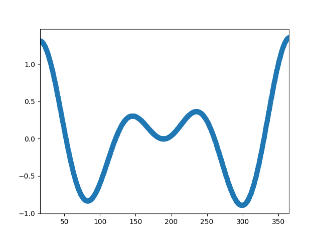

Version 2.1.2
Downsampling lowers the sample rate or sample size of a signal. In this tutorial, the signal is downsampled when the plot is adjusted through dragging and zooming.
import numpy as np
import matplotlib.pyplot as plt
# A class that will downsample the data and recompute when zoomed.
class DataDisplayDownsampler(object):
def __init__(self, xdata, ydata):
self.origYData = ydata
self.origXData = xdata
self.max_points = 50
self.delta = xdata[-1] - xdata[0]
def downsample(self, xstart, xend):
# get the points in the view range
mask = (self.origXData > xstart) & (self.origXData < xend)
# dilate the mask by one to catch the points just outside
# of the view range to not truncate the line
mask = np.convolve([1, 1], mask, mode='same').astype(bool)
# sort out how many points to drop
ratio = max(np.sum(mask) // self.max_points, 1)
# mask data
xdata = self.origXData[mask]
ydata = self.origYData[mask]
# downsample data
xdata = xdata[::ratio]
ydata = ydata[::ratio]
print("using {} of {} visible points".format(
len(ydata), np.sum(mask)))
return xdata, ydata
def update(self, ax):
# Update the line
lims = ax.viewLim
if np.abs(lims.width - self.delta) > 1e-8:
self.delta = lims.width
xstart, xend = lims.intervalx
self.line.set_data(*self.downsample(xstart, xend))
ax.figure.canvas.draw_idle()
# Create a signal
xdata = np.linspace(16, 365, (365-16)*4)
ydata = np.sin(2*np.pi*xdata/153) + np.cos(2*np.pi*xdata/127)
d = DataDisplayDownsampler(xdata, ydata)
fig, ax = plt.subplots()
# Hook up the line
d.line, = ax.plot(xdata, ydata, 'o-')
ax.set_autoscale_on(False) # Otherwise, infinite loop
# Connect for changing the view limits
ax.callbacks.connect('xlim_changed', d.update)
ax.set_xlim(16, 365)
plt.show()
Total running time of the script: ( 0 minutes 0.019 seconds)